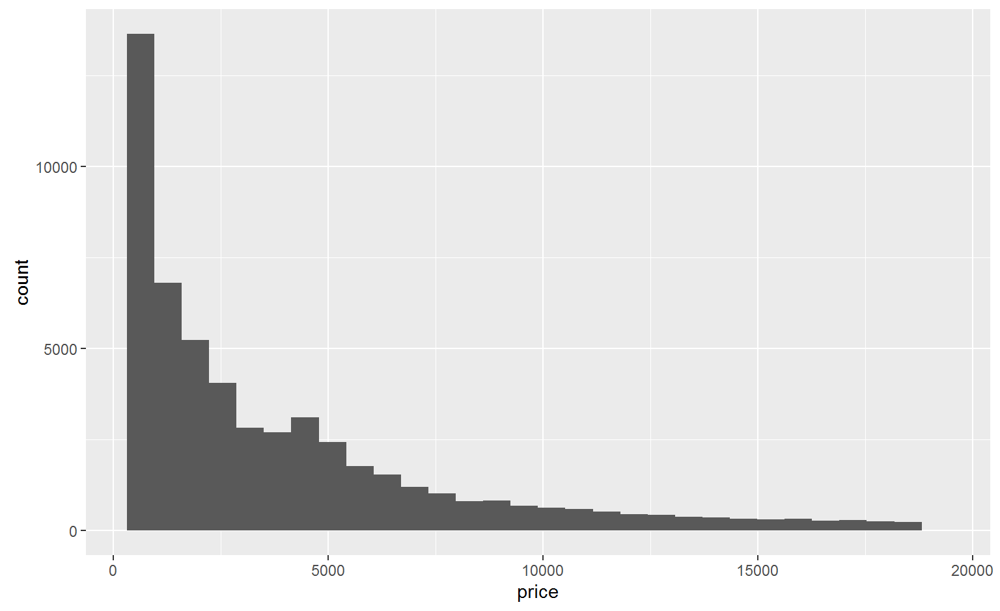
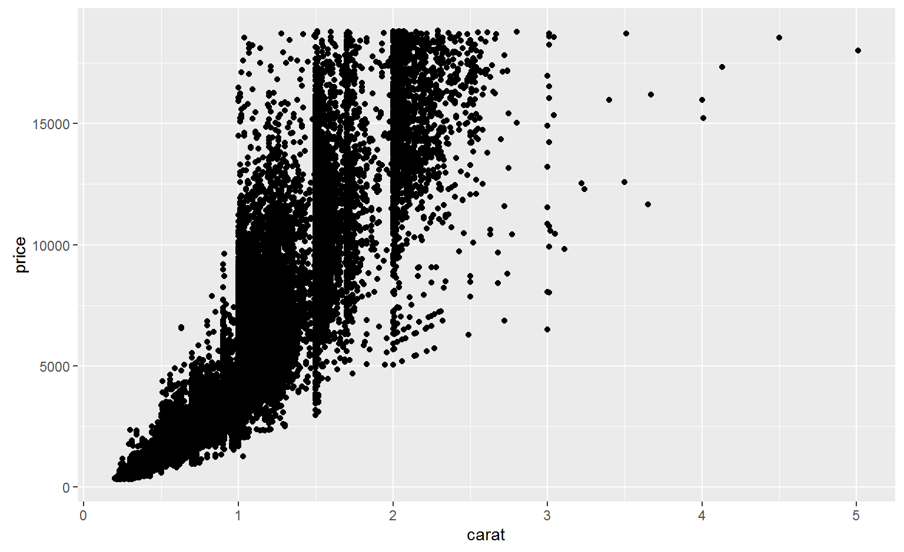
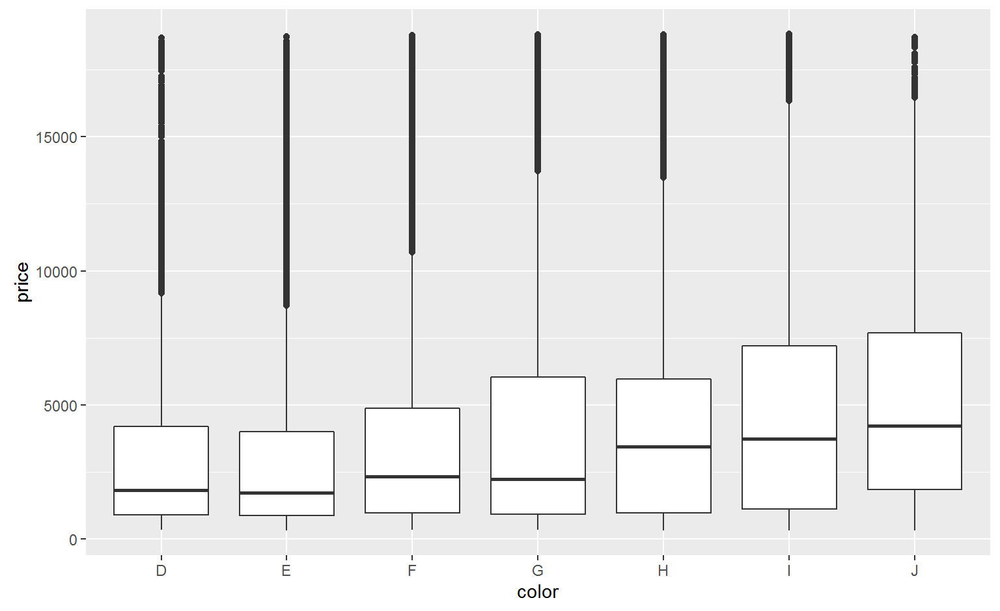
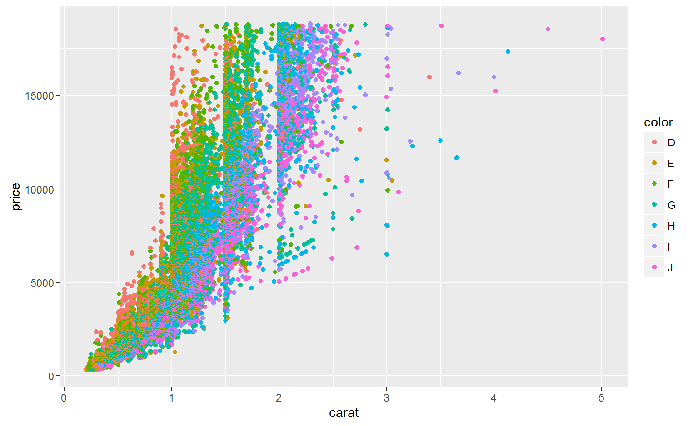
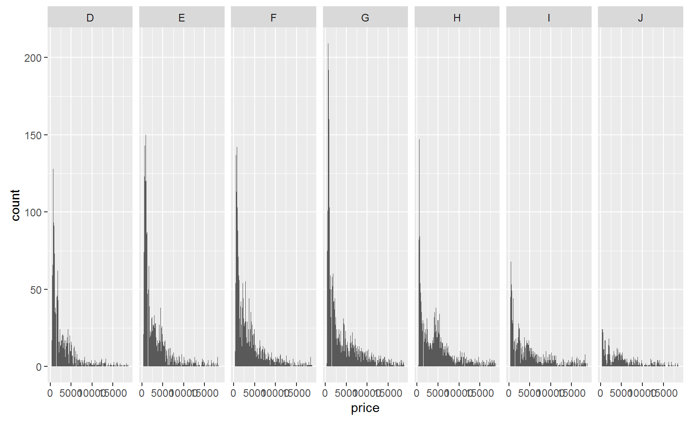

Ranae Dietzel & Andee Kaplan
ggplot2
R
#install ggplot2 if necessary and load the package if(!("ggplot2" %in% installed.packages()[, "Package"])) install.packages("ggplot2") library(ggplot2)
#histogram qplot(data = diamonds, price)

#scatter plot qplot(data = diamonds, carat, price)

#boxplot qplot(data = diamonds, color, price, geom = "boxplot")

#add color qplot(data = diamonds, carat, price, colour = color)

#faceting qplot(data = diamonds, price, geom = "histogram", binwidth = 25, facets = .~color)

You will use the mpg dataset for all questions below.
mpg